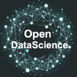
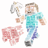
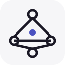
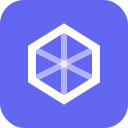
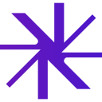
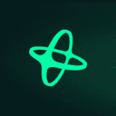
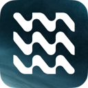

AI research and report agents
Agents that search, read many sources and return a cited answer or report. Of the 184 tools on our research page, 79 fit this narrower job. By pricing: 40 open source, 1 source-available, 17 free or freemium, 12 paid, usage-based or enterprise, 9 pricing on the maker's site. The most-starred open repos here are Hermes Agent (Nous Research) (253,590 stars), Deer Flow (83,959 stars), MindsHub (39,800 stars). Most come from the research (24), MCP servers (12), crypto (9) categories.
Updated
Hermes Agent (Nous Research)
Open-source agent harness; v0.21.7 stable shipped Oct 12, v0.22.0 RCs Oct 13-14.
Added
Deer Flow
ByteDance's open-source long-horizon agent harness that researches, codes and creates using sandboxes, memory and sub-agents.
Added
MindsHub
MindsDB's agent workspace for research, analysis, documents and coding, with a model router, a scoped vault for connected data and swappable open-source agent harnesses.
Added
Vibe-Trading
Open-source personal trading agent for researching markets and testing strategies in natural language.
Added
STORM
Stanford system that writes Wikipedia-style articles from web research.
Added
GPT Researcher
Autonomous agent that researches the web and writes cited reports.
Added

DeepCode
Open agentic coding system that turns papers and specs into code with multi-agent orchestration.
Added
SurfSense
Privacy-focused, open-source NotebookLM alternative with a research agent over your sources.
Added
Magentic-UI
Microsoft Research's experimental human-in-the-loop agent that works across the browser and local files.
Added
Feynman
Open-source research agent that searches, reads papers and writes cited reports.
Added
MiroThinker
Deep research agent and open models tuned for complex research and forecasting tasks.
Added

Voyager
Research agent that explores Minecraft on its own, writing and reusing code skills to learn as it goes.
Added
AIOS
Research AI agent operating system that handles scheduling, context switching, memory, storage and tool management for LLM-based agents.
Added
Kun
Local-first agent workspace for coding, writing, design, research and automation.
Added
LobsterAI
NetEase Youdao's desktop agent for data analysis, slides, documents and web research.
Added
Open Executive
A self-hostable virtual executive: one executive persona backed by a team of specialist agents that handle planning, research, communication and follow-ups for a founder or manager.
Added
Raven
Host agent that plans complex jobs as task graphs and coordinates built-in and third-party agents for research, coding, design and on-call work.
Added
Zotero MCP
MCP server that connects your Zotero research library to Claude and other assistants.
Added
FrontierAgent
Open-source agent runtime and terminal app for long-horizon research and file work, with single-agent ReAct and parallel agent-team modes.
Added
EvoScientist
Self-evolving AI scientist system that autonomously explores research ideas, runs experiments and improves with growing skills and memory.
Added
DeepAnalyze
Agentic LLM from Renmin University that autonomously runs data science pipelines and produces analyst-grade research reports.
Added
Deep Research (u14)
Deep research app that works with any LLM and exposes an API and MCP server.
Added
AutoDev
Multi-agent development platform built on Kotlin Multiplatform for research, coding, review and data queries across IntelliJ, VS Code, CLI and more.
Added
OpenScience
Research agent workbench that reads the literature, writes and runs code and experiments and logs every step, with skills and connectors for databases like PubMed, UniProt and arXiv.
Added
Hyperresearch
Deep research harness that turns Claude Code or Codex into a research agent building a persistent, searchable wiki, with a hosted API and MCP.
Added
SimpleMem
Research-backed lifelong memory library for LLM agents that stores, compresses and retrieves text and multimodal memories, usable over MCP.
Added
Paper2Agent
Multi-agent system that turns a research paper and its code into a working MCP server and agent skills you can query and run.
Added
LLM for Zotero
Zotero plugin that adds a research agent to your library so you can ask questions about papers, compare sources and save notes without leaving the reader.
Added
arXiv MCP Server
MCP server for searching and reading arXiv papers.
Added
MiroFlow
Research agent framework with web UI supporting MiroThinker and other models.
Added
Paper Search MCP
MCP server and CLI that searches and downloads academic papers from arXiv, PubMed, bioRxiv, Semantic Scholar and other sources for research agents.
Added
Claude Scientific Writer
K-Dense's general-purpose scientific writing agent for Claude that drafts research papers and documents.
Added
open-kritt
A self-hosted AI security research tool that orchestrates agents to hunt for vulnerabilities in a codebase and then validate and rank what they find; managed scans are also offered.
Added
Unreal Agent
Unreal Agent is an async-first agent harness from Unreal Labs, a team researching how to make agentic workflows efficient. The library handles inputs with stable IDs and deduplication, append-only sessions that can be forked, and a coordinator that manages each model turn and translates tool calls into operations. It ships with a cloud agent runner, a terminal UI and benchmark runners, under the MIT license.
Added
Growth Lab
An open-source growth agent that learns your product, gathers data, researches the market, runs growth experiments and learns from the results to pick the next move.
Added
MLE-Agent
Pairing agent for ML engineers and researchers that builds baselines, plans with arXiv and Papers with Code, and works through Kaggle tasks.
Added
Wisp Science
Wisp Science is an open-source, local-first AI research workbench for scientists on Windows, macOS and Linux. Its agent searches the literature, runs persistent Python and R kernels on your laptop or remote servers, queries about 80 scientific databases and loads reusable skills, while keeping figures, runs, decisions and drafts together in one project. You bring your own OpenAI-compatible or Anthropic model, or drive Codex or Claude Code, and approval gates stay on by default.
Added
IBM CUGA
IBM Research's configurable generalist agent (CUGA) for enterprise web and API tasks, with a live demo on Hugging Face Spaces.
Added

AutoScientists
A research system from Harvard's Zitnik lab where teams of LLM agents self-organize to plan and run long-running scientific experiments.
Added

OpenComputer
OpenComputer is a platform for building and deploying long-running AI agents as code. You define an agent as a TypeScript function with its model, tools and MCP servers, deploy it with one command, and every session gets its own real cloud computer, with managed sessions, schedules and API keys kept outside the agent's runtime. Templates include a coding agent that edits a repo, runs checks and opens a draft pull request, and market-research and GTM agents; its own Slack coding agent runs on it. Pricing is pay-as-you-go for model calls and per-second machine time.
Added
Hugging Face MCP Server
Hugging Face's MCP server connecting agents to the Hub's models, datasets, papers and Gradio Spaces.
Added
Imbue
AI research company building tools for coding agents, including Sculptor for running parallel agents.
Added
Grok Bot Jev Router
Grok Bot Jev Router is an open-source Python reference router that puts TypeSafe Jev in front of Grok Bot as a cheap decision layer. Before expensive research, browser, retry or subagent work, Jev classifies the request and returns an explicit action such as reuse a cached result, stop a failing retry, cap research, run a deterministic step, or ask a human. It starts in shadow mode that only logs decisions, has an active mode for a Grok Bot skill that honors them, and includes a kill switch. It never sends, pays or deletes anything itself.
Added
Parallel Search MCP
Parallel's MCP servers for web search and deep-research tasks built for AI agents.
Added
Altmetric MCP
Altmetric's MCP server for tracking research attention across news, policy documents and social media.
Added
Lune Research
MCP server that grounds AI agents in full-text computer science research papers.
Added
11x
Digital AI workers for go-to-market teams, including an SDR agent that researches prospects and runs outbound and a phone agent that handles calls.
Added
Bidhelm
Bidhelm is an AI marketing department that runs a company's marketing for it. It researches markets and competitors, writes ad copy and creates ad assets, builds landing pages with lead forms, and runs Google Ads campaigns and X posting every day, managing bids, keywords and budget. It learns from campaign results, moves budget to what works and reports every change it made and why, so owners can steer it in plain language instead of operating ad tools.
Added
blai
AI crypto advisor app to research tokens, build portfolios and trade via chat.
Added
Bottally
Bottally is an AI marketing agent for SEO and AEO that runs on autopilot. Once you connect your blog (WordPress, Webflow, Ghost, Shopify, Wix, Notion, Framer, Next.js or a webhook), it researches keywords and competitor gaps, then writes and publishes one researched article a day with images. It also offers an opt-in backlink exchange network and tracks weekly whether ChatGPT, Google AI Mode, Google AI Overviews and Perplexity recommend your business.
Added
Claude Duet
Claude Duet is Anthropic's proactive personal agent app, in research preview. You message it like an assistant: it sends a morning brief from your connected apps, keeps watch on your inbox, calendar and follow-ups through the day, and only pings you when something needs you. You can also hand it tasks, from scheduling meetings to building dashboards or simple web apps, and it keeps working when you step away but checks with you before acting on your behalf. It runs on iOS, Android and claude.ai, starting with a waitlist for US Pro and Max subscribers on their existing plan limits.
Added
Clay
Go-to-market data platform for enriching leads and running agentic research workflows and outreach plays.
Added
CoChat
AI research agents that gather verified sources and organize findings.
Added
Consensus
AI academic search engine over peer-reviewed literature for finding, organizing and analyzing scientific research.
Added

Crewdle
Hire autonomous agents and teams for support, sales, bookkeeping and research, paid per task.
Added
CustomGPT.ai
No-code platform for building AI agents grounded in your business content, with citations and anti-hallucination controls.
Added
Elicit
Research assistant that finds and summarizes academic papers.
Added
ElizaOS
Open-source TypeScript agent operating system with wallet and on-chain plugins, maintained by Eliza Research.
Added
Extruct AI
Company research API for AI that finds and researches companies from a 10M-company index or the live web, with sources.
Added
FlexQueries
FlexQueries is a hosted MCP server and REST API for SEO and AI-visibility research (keywords, SERPs, backlinks, competitors, rankings, site audits) that connects to Claude, ChatGPT, Cursor and Codex over OAuth, billed with prepaid credits that never expire.
Added
Frase MCP
Frase's MCP server with SEO, GEO and AI visibility tools to research, write, optimize, publish and monitor content.
Added
Gemini Notebook
Google's AI research tool, formerly NotebookLM, that analyzes the sources you upload and turns them into summaries, answers and new formats.
Added
Genspark
All-in-one AI workspace whose agents research and produce slides, docs, sheets, images, video and code for you.
Added
Google Deep Review
Google Research's multi-agent system that checks research papers, design docs, and legal or financial documents for logical gaps and unsupported claims.
Added
HeyAnon
Conversational DeFi agent that executes swaps, bridges and research across chains.
Added
Laika AI
Polymetric by Laika AI: AI research, whale tracking and a screener for Polymarket prediction markets (formerly a Web3 research extension).
Added
Liner MCP
Liner's MCP server for real-time web and scholarly search with cited answers and multi-step deep research.
Added
Ludo.ai
AI assistant for game designers: market research, concept ideas, game design docs and asset generation.
Added
Manus
General-purpose autonomous agent that does research and tasks in a cloud computer.
Added
Messari Copilot
Messari's AI research copilot for crypto, answering questions from its research, news and market data, with an API and hosted MCP server for agents.
Added

Nansen AI
On-chain analytics with an AI agent that researches tokens and wallets and can execute trades, powered by 500M+ labeled addresses.
Added
Ninja AI
All-in-one AI assistant with research, coding and writing agents.
Added
Santiment
Crypto market intelligence on on-chain, social and development activity, with an AI assistant and API that agents can use for research.
Added
Scite MCP
Scite's MCP server that grounds AI answers in scientific literature, with full-text search and citation-based trust signals.
Added
Serpstat MCP
Serpstat's MCP server for automating SEO tasks such as keyword research, competitor analysis and audits.
Added
Skywork
AI workspace agents that turn a prompt into docs, slides, sheets, podcasts and web pages backed by deep research.
Added

Surf AI
AI research assistant for crypto (and now US equities) built on on-chain, market and social data.
Added
TwelveLabs Jockey MCP
TwelveLabs' hosted MCP server for Jockey, a video-understanding agent that searches, tracks entities and answers questions across your videos and images with clip citations.
Added
vidIQ MCP
vidIQ's MCP server for researching and creating content for YouTube, Instagram and TikTok from an AI assistant.
Added
GitHub repos (47)
| Repo | GitHub stars | Licence | Last push |
|---|---|---|---|
| 253,590 | MIT | 2026-10-23 | |
| 83,959 | MIT | 2026-10-23 | |
| 39,800 | MIT | 2026-10-19 | |
| Vibe-Trading ↗ | 35,643 | MIT | 2026-10-23 |
| 31,627 | MIT | 2025-09-30 | |
| 30,082 | Apache License 2.0 | 2026-10-10 | |
| DeepCode ↗ | 16,717 | MIT | 2026-10-22 |
| 16,459 | Apache-2.0 | 2026-10-21 | |
| 10,097 | MIT | 2026-07-23 | |
| 9,976 | MIT | 2026-10-23 | |
| 8,420 | Apache License 2.0 | 2026-03-23 | |
| Voyager ↗ | 7,268 | MIT | 2023-07-27 |
| 6,492 | no licence (the LICENSE file is empty) | 2026-07-20 | |
| 6,313 | PolyForm Noncommercial License 1.0.0 | 2026-10-17 | |
| 6,119 | MIT | 2026-10-16 |
Top 15 of 47 by stars. Stars and licence come from each repo, checked when the listing was last verified.
FAQ
What are the best AI tools for research focused on research and reports?
We list 79. The first three by GitHub stars and featured status are Hermes Agent (Nous Research): Open-source agent harness; v0.21.7 stable shipped Oct 12, v0.22.0 RCs Oct 13-14.; Deer Flow: ByteDance's open-source long-horizon agent harness that researches, codes and creates using sandboxes, memory and sub-agents.; MindsHub: MindsDB's agent workspace for research, analysis, documents and coding, with a model router, a scoped vault for connected data and swappable open-source agent harnesses.
Are there free or open-source options?
Yes: 40 open source, 1 source-available, 17 free or freemium, 12 paid, usage-based or enterprise, 9 pricing on the maker's site. Pricing is as each maker states it.
More from research
Tools are grouped by what each says it does. Missing one? Submit it free.